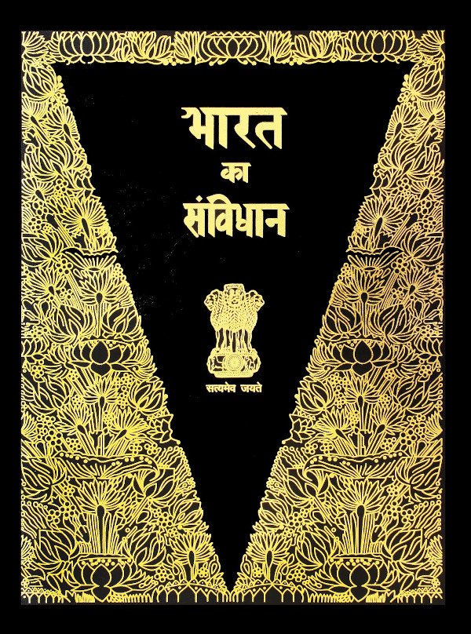

भारत का संविधान
इण्डिया अर्थात् भारत राज्यों का एक संघ है। यह संसदीय प्रणाली की सरकार वाला एक स्वतंत्र प्रभुसत्ता सम्पन्न समाजवादी लोकतंत्रात्मक गणराज्य है।
यह गणराज्य भारत के संविधान के अनुसार शासित है जिसे संविधान सभा द्वारा 26 नवम्बर 1949 को ग्रहण किया गया तथा जो 26 जनवरी 1950 को प्रवृत्त हुआ।
संविधान में सरकार के संसदीय स्वरूप की व्यवस्था की गई है जिसकी संरचना कतिपय एकात्मक विशिष्टताओं सहित संघीय हो। केन्द्रीय कार्यपालिका का सांविधानिक प्रमुख राष्ट्रपति है।
भारत के संविधान की धारा 79 के अनुसार, केन्द्रीय संसद की परिषद में राष्ट्रपति तथा दो सदन है जिन्हें राज्यों की परिषद (राज्य सभा) तथा लोगों का सदन (लोक सभा) के नाम से जाना जाता है।
संविधान की धारा 74 (1) में यह व्यवस्था की गई है कि राष्ट्रपति की सहायता करने तथा उसे सलाह देने के लिए एक मंत्री परिषद होगी जिसका प्रमुख प्रधान मंत्री होगा,
राष्ट्रपति सलाह के अनुसार अपने कार्यों का निष्पादन करेगा। इस प्रकार वास्तविक कार्यकारी शक्ति मंत्रिपरिषद में निहित है जिसका प्रमुख प्रधानमंत्री है।
उद्देशिका
हम, भारत के लोग, भारत को एक [सम्पूर्ण प्रभुत्व-सम्पन्न समाजवादी पंथनिरपेक्ष लोकतंत्रात्मक
गणराज्य] बनाने के लिये, तथा उसके समस्त नागरिकों को:
सामाजिक, आर्थिक और राजनैतिक न्याय,
विचार, अभिव्यक्ति, विश्वास, धर्म
और उपासना की स्वतंत्रता,
प्रतिष्ठा और अवसर की समता
प्राप्त कराने के लिये,
तथा उन सब में
व्यक्ति की गरिमा और [राष्ट्र की एकता
और अखण्डता] सुनिश्चित करने वाली
बंधुता बढ़ाने के लिये
द्रढ़संकल्प होकर अपनी इस संविधान सभा में आज तारीख 26 नवम्बर, 1949 ई. (मिति मार्गशीर्ष शुक्ला
सप्तमी,संवत् दो हजार छः विक्रमी) को एतद्द्वारा इस संविधान को अंगीकृत, अधिनियमित और आत्मार्पित करते हैं।
